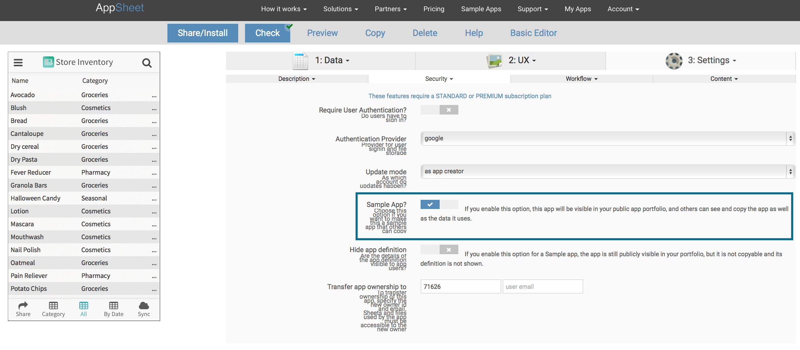

Making your app definition public to troubleshoot issues – AppSheet
Often, there is a need to show someone else your app's definition. Another common use case is when you want someone else to see your app definition and make suggestions for improvements (eg: when posting questions to the user community). You can do this in two quick steps:
- Mark your app as a 'sample' to appear in your AppSheet portfolio. See information about this below.
- Copy a link to the app definition (from your browser url bar) and share it with whoever needs to help with the troubleshooting (usually, add it in a post on our user community forum).
Please be aware that making your app public also means that the data within the app is also visible to a public audience. Do NOT do this if you have confidential data.
In the Advanced Editor>Settings>Security tab, click the 'Sample App?' check box. The app definition now becomes publicly visible via your portfolio page: https://www.appsheet.com/portfolio/<userid>. Or you can simply share/email the browser link to the app editor page.
